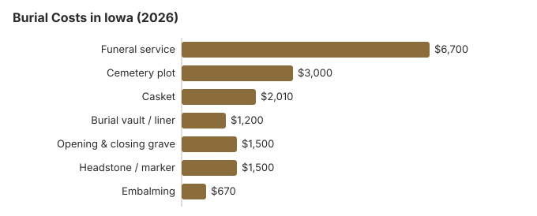

Burial Costs in Iowa (2026)
This guide puts them all in one place for Iowa and flags which line items most often carry room to negotiate.
Iowa Burial Costs by Item
| Item | Average Cost | Range |
|---|---|---|
| Funeral service | $6,700 | $5,025 – $8,710 |
| Cemetery plot | $3,000 | $1,500 – $6,000 |
| Casket | $2,010 | $670 – $5,360 |
| Burial vault / liner | $1,200 | $800 – $10,000 |
| Opening & closing grave | $1,500 | $500 – $3,000 |
| Headstone / marker | $1,500 | $500 – $5,000+ |
| Embalming | $670 | $500 – $1,500 |
Methodology note: These figures are our estimates, not a survey of local providers, and they are not a quote or professional advice. See how we calculate them or read the full disclaimer.

The total cost of burial in Iowa, including all cemetery fees, typically ranges from $14,910 to $19,410 depending on choices made.
Burial Options in Iowa
Spending Less on Burial in Iowa
Burial costs in Iowa can be managed with smart planning:
- Call the township or county clerk: Iowa has many township, county, and fraternal cemeteries that simply do not appear in Google results.
- Work with independent funeral homes: many Iowa homes are still family-owned, and their prices usually track the NFDA national averages more closely than chain-owned locations. On the cemetery side, Iowa Code §523I.301 requires a cemetery to say before a sale whether opening and closing is included, to disclose current opening and closing prices if it is not, and to list every fee for interment or disinterment. Section 523I.303 bars a cemetery from shutting out the licensed funeral director you hired.
- Direct burial is widely accepted: Cultural openness to direct burial (no viewing, no ceremony, immediate interment) is stronger in Iowa than on the coasts.
How Iowa Burial Compares With the Region
Rural Iowa counties still maintain pioneer-era cemeteries with active sections and prices that reflect community upkeep rather than corporate returns. Opening-and-closing fees at an Iowa township cemetery typically run $400-$900, compared to $1,500-$2,500 at a metro private cemetery. If a rural cemetery away from Des Moines is acceptable to your family, the savings compound fast.
Burial Resources
- Funeral Consumers AllianceNonprofit consumer advocacy for funeral pricing
- Headstone & Monument GuideCosts, types, and buying tips
- Green Burial OptionsEco-friendly and natural alternatives
- Best Online Casket RetailersCaskets bought online often cost less
- Best Burial InsuranceCompare plans to cover burial expenses
Compare Funeral Costs
- Average Funeral Cost in 2026National cost breakdown with real prices
- Cremation vs. Burial Cost ComparisonSide-by-side price comparison to help you decide
- Funeral Cost BreakdownEvery line item explained: know what you're paying for
- Cheapest Funeral OptionsLower-cost alternatives, with typical price ranges
- Direct Cremation: Most Affordable OptionNFDA 2023 median $2,645 with a family-supplied container (latest available)
- How to Compare Funeral PricesStep-by-step guide to getting the best price
Frequently Asked Questions
What do Iowa families spend on burial?
On this site's estimates, a complete Iowa burial costs $14,910 to $19,410. The largest single item is the funeral home's service, about $6,700, and the cemetery charges together (plot about $3,000, vault about $1,200, opening and closing about $1,500) add roughly $5,700. A casket bought from the funeral home adds about $2,010, and a headstone $500 to $5,000.
Two choices move the total most: direct burial, which drops the viewing and embalming, and buying the casket from an outside seller, which the FTC Funeral Rule lets you do without a handling fee. Complaints about Iowa funeral homes go to the Department of Inspections, Appeals, and Licensing (515-229-3939).
Is a burial vault required in Iowa?
Burial vaults are required by most cemeteries in Iowa as a matter of cemetery policy (to prevent ground settling), though they are rarely mandated by state law. Vault costs in Iowa typically range from $800 to $10,000.
How can I reduce burial costs in Iowa?
Direct (immediate) burial skips embalming, viewing and a ceremony at the funeral home, so it is usually the lowest-cost burial on an Iowa price list. You may supply your own casket in Iowa; the FTC Funeral Rule forbids a handling fee for it. A VA national cemetery burial costs eligible Iowa veterans nothing for the plot, opening and closing, or headstone.
How do cemetery prices differ across Iowa?
A useful tip: township, county, and fraternal cemeteries in Iowa are often only listed through the county clerk and frequently price plots well below commercial memorial parks.
What is the total cost of burial in Iowa including everything?
The total cost of burial in Iowa including funeral service ($6,700), cemetery plot ($3,000), casket ($2,010), vault ($1,200), opening/closing ($1,500), and headstone ($500–$5,000) typically ranges from $14,910 to $19,410.
Can I choose a natural or green burial in Iowa?
A growing number of Iowa cemeteries now offer green burial sections (biodegradable container, no embalming, no vault), and the total cost is usually below a traditional burial. If a dedicated green burial ground is not nearby, some families in Iowa use a hybrid approach (traditional plot without embalming).
More for Iowa
Iowa's limits on disinterment
Iowa is stricter than most states about opening a grave. Without a court order, a body may be disinterred only for reburial or an autopsy, and only with a funeral director supervising. The state registrar will not issue the permit unless the person authorized to control the remains under Iowa Code § 144C.5 consents (Iowa Code § 144.34; checked October 29, 2026).
- Cremated remains: these may be disinterred without a court order, still under a funeral director's supervision.
- Disinterment for cremation: this needs a court order. The body can be cremated afterward only if the state or county medical examiner finds the death was from natural causes.
Burial rules and help in Iowa
For a license check or complaint about a funeral home arranging a burial in Iowa, call the Iowa Department of Inspections, Appeals, and Licensing at 515-229-3939; Iowa cemeteries can have a separate regulator.
The Iowa funeral-director requirement that the Funeral Consumers Alliance lists (Iowa Code § 331.805; Iowa Admin. Code 481-900.10(2)) covers arranging a cremation, not a burial; for a burial, ask the Iowa cemetery what it needs from the family before the date is set.
An Iowa burial needs a disposition permit. If you switch to cremation instead, there is no fixed waiting period, though a permit is required (Iowa Code § 331.805(3)(b)).
Iowa Code § 252.27 lets the county board of supervisors pay reasonable burial costs, limited to $250 for a nonresident transient; a resident's county may pay more under its own policy. (Source: Iowa Code §§ 252.25, 252.27.) A surviving spouse or child may claim Social Security's one-time $255 death payment within two years; it is paid to them, not to the Iowa cemetery.
An Iowa veteran's grave in a national cemetery costs the family nothing for the plot, opening and closing, or marker. In Iowa, VA national cemeteries accepting burials: Keokuk National Cemetery (319-524-5193); state veterans cemetery: Iowa Veterans Cemetery (515-727-3444) (source: VA National Cemetery Administration).
Next steps for a burial in Iowa
- Price the Iowa cemetery separately: plot, opening and closing, vault or liner, and marker are often sold apart from the funeral home.
- Ask the Iowa cemetery whether it requires an outer burial container before you shop for one.
- Ask the Iowa county about its general assistance burial limit before choosing a cemetery.
- If the person served, ask Keokuk National Cemetery what paperwork it needs, usually starting with the DD214 discharge record.
- Report a funeral home that misprices a burial to the board at 515-229-3939.